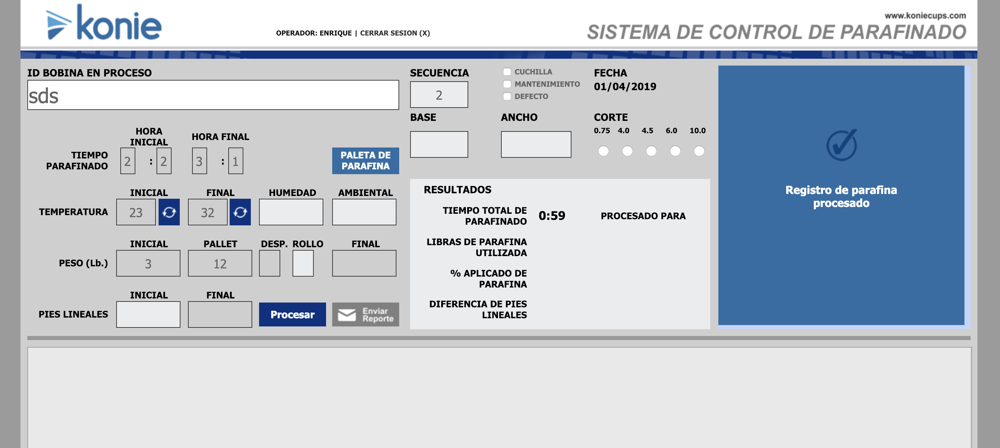
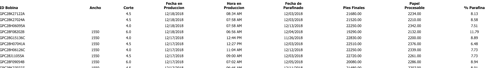
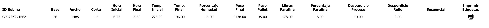
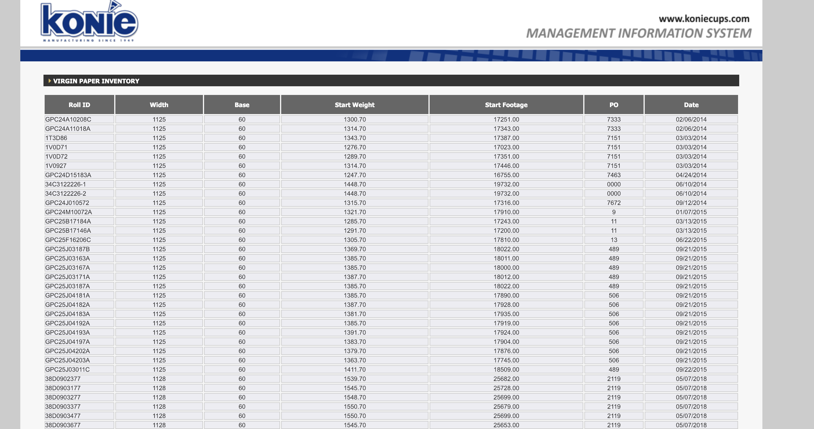

Wax Module¶
Paraffin Control System
Editors need to login into the system to manage the paraffin production.
File Structure¶
- DYMO.Label.Framework.2.0.2.js
- DYMO.Label.Framework.latest.js
- PrintLabel.js
- PrintLabel2.js
- base.php. Return the list of material by GPC25B18072A
- bobinaprod.php manage the roll if was received on the warehouse
- captura.php
- conca.php
- conex.php make the conection to the local database
- conf.php store the parameters (constants) for the local database conection
- cortebobina.php
- dymo.php
- email_wax - Copy.php
- email_wax.php
- eml_konie.png
- eml_konie_generico.png
- func.php
- hora.php
- index.php. Login Page
- jquery-ui.js
- jquery.fullscreen.min.js
- jquery.jqprint-0.3.js
- jquery.js
- listabobinas.php. data of the paraffin proccess
- listabobinas2.php data of the paraffin proccess
- listarollo.php. data of the paraffin proccess
- listarollo2.php. data of the paraffin proccess
- login.css
- logout.php. Logout the user from the system
- lrg.php
- pago.php. Integration with instapago
- papel.php List of the papper before the parffin proccess
- papel_core.php
- papel_parafinado.php List of the papper after the parffin proccess
- peso.php This function calculate the weight of the roll every minute
- read_xml2_ivan.php
- reel.php Coil control system sent to production
- registro_parafina.php Create a register on the database about the processed coil(bobina)
- registrobobina.php Create a register on the database about the new coil(bobina)
- registrobobina_danada.php Create a register on the database about the damage coil(bobina)
- registrowax.php
- registrowax_espera.php
- rollo.php
- rollo_noregistrado.php
- rollot.php
- sensor.php
- validNum.js
- wax.css
- wax.php. Paraffin Control System Page
- wax_low.css
- wax_ultimo.php
Screenshots¶
Paraffin Control System (wax.php)
(listabobinas.php)
(listarollo.php)
(papel.php)
